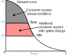

Lecture 5 - Multinomial Logit
ENCI707: Engineering Demand and Policy Analysis
Outline
- Discrete multinomial choice - Type I EV Distribution
- Multinomial Logit (MNL) - Scale and Systematic Utility Function
- MNL Estimation & Specification
- Elasticity, Marginal Effect, & Substitution
- IIA & IIA violation tests
- Policy Evaluation
- Forecasting & Prediction
- Confidence Intervals on Predictions
- Model transferability & Parameter Updating
Discrete Choice Multinomial Choice - Type I Extreme Value Distribution
Binary versus Multinomial Choice
Binary versus Multinomial Choice
Discrete Multinomial Choice
A multinomial choice reduced into an equivalent binary choice problem:

\[𝑈_𝑗 \ge \max_{j,j' \in C_i, j \neq j'} U_{j'}\] \[𝑈_𝑗 \ge 𝑈_𑘠\text{; } k \neq j \text{ & } j,k \in C_i\]
where \(C_i\) is the choice set of decision maker \(i\), \(j\) is the best alternative, and \(k\) is the second best alternative
Probability of choosing alternative j:
\[Pr⁡(𝑗) = Pr⁡((𝑉_𝑗+\epsilon_𝑗) \ge (𝑉_𝑘+\epsilon_𑘠))\] \[Pr⁡( 𝑗)=Pr⁡(\epsilon_𑘠\leq (𝑉_𝑗−𝑉_𝑘+\epsilon_𝑗 )) \text{ (a CDF function)}\]
Discrete Multinomial Choice
A multinomial choice reduced into an equivalen Choice probability in a multinomial choice context: \[Pr⁡(𝑗)=Pr⁡(\epsilon_𑘠\leq (𝑉_𝑗−𝑉_𝑘+\epsilon_𝑗 ))\]
Probability distribution of random utility (\(\epsilon\)) needs to be fully specified to get the unconditional probability: \[Pr⁡(𝑗)=\int_{\epsilon_𝑗=−\infty}^{+\infty}\int_{\epsilon_𝑘=−\infty}^{𝑉_𝑗−𝑉_𝑘+\epsilon_𝑗} 𝑓(\epsilon_𝑗,\epsilon_𝑘)𝑑 \epsilon_𝑗 𝑑 \epsilon_𝑘\]
- Specification of univariate distribution, \(f(\epsilon_k)\) , and the joint distribution, \(f(\epsilon_j,\epsilon_k)\), are necessary
- Possible distributions:
- Multivariate normal distribution
- Type I Extreme Value distribution
Type I Extreme Value Distribution
- Type I (Gumbel) distribution is the most convenient distribution to derive a closed form choice model
- If is Type I Extreme Value (Gumbel) distributed: \[𝑓(\epsilon)=\mu 𝑒^{−\mu(\epsilon−\eta)} 𝑒^{−𝑒^{−\mu(\epsilon−\eta)}}\] \[F = e^{-e^{-\mu(\epsilon-\eta)}} \text{; } \mu > 0\]
- \(\eta\) is a location parameter and \(\mu\) is a positive scale parameter
- Location parameter is mode of distribution
- Scale parameter defines the dispersion of the PDF shape
Type I Extreme Value Distribution

Basic Properties of Gumbel distribution
- The mode of the distribution is \(\eta\) (the location of peak of the PDF on x axis from zero).
- The mean is (\(\eta+\gamma/\mu\)), where \(\gamma\) = Euler’s constant=0.577.
- The variance is \(\pi^2/6\mu^2\).
- If \(\epsilon\) is Gumbel distributed with (\(\eta, \mu\)), and if \(\alpha\) is any positive scalar constant, then (\(\alpha \epsilon + V\)) is also Gumbel distributed with parameters (\(\alpha \eta +V\)) and \(\mu/\alpha\).
- If \(\epsilon_1\) and \(\epsilon_2\) are independent Gumbel variables, then (\(\epsilon_1-\epsilon_2\)) is logistically distributed.
- If \(\epsilon_1\) and are Identical and Independent Gumbel variables with parameters (\(\eta_1,\mu\)) and (\(\eta_2,\mu\)) respectively then \(\max(\epsilon_1,\epsilon_2)\) is also Gumbel distributed with parameters:
\[\left(\frac{1}{\mu} \ln⁡(𝑒^{\mu\eta_1}+𝑒^{\mu\eta_2 } ),\mu \right)\]
Basic Properties of Gumbel distribution
- If \(( \epsilon_1,\epsilon_2,\epsilon_3,\dots ,\epsilon_n )\) are \(n\) independent Gumbel distributed variables with parameters (\(\eta_1,\mu), (\eta_2,\mu),\dots (\eta_n,\mu)\) respectively then \(\max(\epsilon_1,\epsilon_2,\epsilon_3,\dots,\epsilon_n)\) is also Gumbel distributed with parameters (mean, scale): \[\left(\frac{1}{\mu} \ln⁡\sum_{𝑗=1}^𝑛 𝑒^{\mu \eta_𝑗}, \mu \right)\]
Notes:
- Homoskedasticity: Independent Gumbel distributed variables have a common scale parameter, \(\mu\).
- Property 5 is used to derive binomial logit model probability equation.
- Property 7 can be used to derived closed form equation for multinomial logit (MNL) Model.
Multinomial Logit Model - Scale & Systematic Utility Functions
Multinomial Logit Model (MNL)
- In case of a multinomial choice situation: Assume random utility (\(\epsilon\)) is Gumbel distributed with \(\eta = 0\) location parameter and a common scale, \(\mu\).
- Assume that the utility of the second-best alternative is \(U^*\), which is the maximum of all other alternatives except alternative \(j\), the best one. \[𝑈^∗=\max_{k \neq j \text{ & } 𝑗,𑘠\in 𝐶_𝑖} (𝑉_𝑘+\epsilon_𑘠)\]
- According to Property 7, \(U^*\) is also Gumbel distributed with parameters (mean, scale)
\[ \left( \frac{1}{\mu} \ln \sum_{k \neq j \text{ & } 𝑗,𑘠\in 𝐶_𝑖} e^{\mu V_k}, \mu \right)\]
Multinomial Logit Model (MNL)
We can write that the second-best alternative is \[U^∗= V^∗+\epsilon^∗ \text{, } V^* = \frac{1}{\mu} \ln \sum_{k \neq j \text{ & } 𝑗,𑘠\in 𝐶_𝑖} e^{\mu V_k}\]
Now for the probability of choosing alternative \(j\) (equivalent binary logit form) \[Pr⁡(𝑗)=Pr⁡\left((𝑉_𝑗+\epsilon_𝑗) \ge \max_{k \neq j \text{ & } 𝑗,𑘠\in 𝐶_𝑖} (V_k + \epsilon_k)\right)\] \[Pr⁡(𝑗)=Pr\left((𝑉_𝑗+\epsilon_𝑗) \ge (𝑉^∗+\epsilon^∗)\right)\] \[Pr⁡(𝑗)=Pr⁡\left((𝑉^∗+\epsilon^∗)−(𝑉_𝑗+\epsilon_𝑗) \leq 0\right)=Pr\left((\epsilon^∗−\epsilon_𝑗) \leq(𝑉_𝑗−𝑉^∗)\right)\]
Multinomial Logit Model (MNL)
- According to Property 5, this function is logistically distributed. So
\[Pr⁡( 𝑗)=\frac{1}{1+𝑒^{\mu(𝑉^∗−𝑉_𝑗)}} = \frac{e^{\mu V_j}}{e^{\mu V_j}+𝑒^{\mu(𝑉^∗−𝑉_𝑗)}}\] \[Pr⁡( 𝑗)=\frac{e^{\mu V_j}}{e^{\mu V_j}+e^{\ln \sum_{k \neq j \text{ & } 𝑗,𑘠\in 𝐶_𝑖} e^{\mu V_k}}}= \frac{e^{\mu V_j}}{e^{\mu V_j}+\sum_{k \neq j \text{ & } 𝑗,𑘠\in 𝐶_𝑖} e^{\mu V_k}}\] \[Pr⁡(𝑗)=\frac{e^{\mu V_j}}{\sum_{𑘠\in 𝐶_𝑖} e^{\mu V_k}}\]
- This is well-known Multinomial Logit Model (MNL) - or softmax function in ML!
Scale of the MNL Model
- Scale (\(\mu\)) is inversely related to the variance of random error term
- Variance is \(\pi^2/6\mu^2\) for a IID Type I EV error
- As \(\mu -> \infty\), Variance \(-> 0\)
- All information are captured by the deterministic component (\(V\)
- Choice becomes deterministic (the alternative with maximum V is chosen)
- As \(\mu -> 0\), Variance \(-> \infty\) & \(\exp(\mu V) = 1\)
- Alternatives are equally likely
- Choice model does not provide any information
- Constant scale, \(\mu\), is not identified in an MNL using only one dataset
- Separate scale needs to be specified when fusing multiple datasets
Systematic Utility Function
Systematic utility function: Linear-in-parameter function \[𝑉_1=\beta_1+\beta_𝑡 𝑥_{1𝑡}+\beta_{1ğ‘} 𝑥_ğ‘+\beta_ğ‘ 𝑥_{1ğ‘}^2+\beta_{1𝑎𝑐} 𝑥_ğ‘^3+\beta_{1𝑎𝑙} \ln⁡(𝑥_ğ‘)+\dots\] \[𝑉_2=\beta_2+\beta_𝑡 𝑥_{2𝑡}+\beta_{2ğ‘} 𝑥_ğ‘+\beta_ğ‘ 𝑥_{2ğ‘}^2+\beta_{2𝑎𝑐} 𝑥_ğ‘^3+\beta_{2𝑎𝑙} + \ln⁡(x_a)+\dots\] \[\vdots\] \[𝑉_J=\beta_J+\beta_𝑡 𝑥_{Jt}+\beta_{Jğ‘} 𝑥_ğ‘+\beta_ğ‘ 𝑥_{Jğ‘}^2+\beta_{J𝑎𝑐} 𝑥_ğ‘^3+\beta_{J𝑎𝑙} + \ln⁡(x_a)+\dots\]
- Alternative Specific Constant - (J-1) are identified
- Permits non-linear transformed variables
- Can be generic if vary across alternatives
- Must be alternative-specific if constant across alternatives (only J-1 are identified)
Systematic Utility Function
- Systematic utility function: Linear-in-parameter function \[𝑉_𝑗=\beta_𝑗+\beta_𝑡 𝑥_{ğ‘—ğ‘¡}+\beta_𑘠ğ‘¥_{ğ‘—ğ‘˜}+\dots \text{ (individual variable space)}\] \[𝑉_𝑗=\beta_𝑗+(\beta_𝑡/\beta_𝑘)𝑥_{ğ‘—ğ‘¡}+𝑥_{ğ‘—ğ‘˜}+\dots \text{ (variable ratio space)}\] \[ 𝑉_𝑗=\beta_𝑗+(\beta_𝑡/\beta_ğ‘)𝑥_{𝑗−𝑡𝑖𝑚𝑒}+(\beta_𝑟/\beta_ğ‘)𝑥_{𝑗−𝑟𝑒𝑙𝑖𝑎𝑏𝑖𝑙𝑖𝑡𝑦}+𝑥_{ğ‘—−ğ¶ğ‘œğ‘ 𝑡}+\dots \] \[𝑉_𝑗=\beta_𝑗^{'}+\underset{\begin{array}{c} \text{(Willingness-to-pay} \\ \text{for time savings)} \end{array}}{\beta_{𝑡𝑐}} 𝑥_{𝑗−𝑡𝑖𝑚𝑒}+\underset{\begin{array}{c} \text{(Willingness-to-pay} \\ \text{for improved reliability)} \end{array}}{\beta_{𝑟𝑐}} 𝑥_{𝑗−𝑟𝑒𝑙𝑖𝑎𝑏𝑖𝑙𝑖𝑡𝑦}+𝑥_{ğ‘—−ğ¶ğ‘œğ‘ 𝑡}+\dots \]
MNL Estimation & MNL Specification
Estimation of MNL
- Maximum likelihood estimation: \[\text{Likelihood function: } 𝐿_𝑖=\prod_{𝑗=1}^𝐽 (Pr⁡( 𝑗))^{𝑦_𝑖} \] \[\text{Log-likelihood function: } LL_𝑖=\sum_{𝑗 \in C_i} y_j \ln(Pr⁡( 𝑗)) \] \[\text{Sample log-likelihood function: } LL=\sum_{i=1}^N \sum_{𝑗 \in C_i} y_j \ln(Pr⁡( 𝑗)) \]
- Use gradient search algorithms
- Analytical gradient and Hessian functions provide faster estimation than numerical gradient and Hessian functions
Goodness-of-Fit
Model goodness-of-fit is measured by \(\rho^2\) value
- \(k\) = difference in total number of parameters between two models \[\rho_0^2 = \frac{LL(\beta) - LL(0)}{LL(*) - LL(0)} = 1 - \frac{LL(\beta)}{LL(0)} \text{; } adj-\rho_0^2 = 1 - \frac{LL(\beta) - k}{LL(0)}\]
\[\rho_C^2 = \frac{LL(\beta) - LL(C)}{LL(*) - LL(C)} = 1 - \frac{LL(\beta)}{LL(C)} \text{; } adj-\rho_C^2 = 1 - \frac{LL(\beta) - k}{LL(C)}\]
- Adjusted \(\rho^2\) value 0.3 to 0.5 is considered reasonable (but depends on model)
- Alternative: Comparing predicted vs. observed shares
Goodness-of-Fit
- Comparing predicted versus observed share of alternatives:
- Use holdout sample (20%-30% sample unused for estimation):
- Problematic for small sample size
- Holding out may distort market sample share of the alternatives and thereby the alternative specific constants
- Use bootstrap:
- Generate large number of samples bootstrapped from the same sample
- Compare under/over predictions
- Use holdout sample (20%-30% sample unused for estimation):
Validation by Bootstrapping
Validation by Bootstrapping
Validation by 1000 Bootstrap Sample Simulation
| Mode | Sample Share (%) | Mean Prediction Error (%) | Max Over-Prediction (%) | Max Under-Prediction (%) |
|---|---|---|---|---|
| Car Driver | 26 | 0.033 | 3.26 | -2.78 |
| Car Passenger | 1 | 0.015 | 0.91 | -0.71 |
| Transit | 59 | -0.026 | 4.05 | -3.36 |
| Bicycle | 4 | 0.001 | 2.35 | -1.72 |
| Walk | 11 | -0.022 | 2.25 | -2.43 |
Specification Tests
- Expected signs of the coefficients
- Expected substitution patterns - e.g., value of time savings, etc.
- Likelihood ratio test (\(\times\)-2 by Wilks Theorem):\(-2[LL(\beta)-LL(\beta^{'})]\) is \(\chi^2\) distributed with \(k\) (= number of restricted parameters = the difference between number of parameters of two models) degrees of freedom
- Goodness-of-Fit measures: Rho-square, AIC, BIC
Specification of Logit Model
- Logit model works fine if there is no significant random variation of effects of any systematic variables:
- Unobserved (random) effects of any variable (varying across the alternatives and/or observations) violates the identical error term distribution assumption!
- Example:
- Effects of driving cost is influenced by income only: systematic effect and logit model will work fine with cost normalized by income
- Effects of driving cost influenced by income and some unobserved factor: the logit model will be mis-specified
Specification of Logit Model
- Logit model works fine if choice alternatives are perfectly IIA (independent of irrelevant alternatives): proportional substitution exists
- Imperfect competition or correlated variations among subsets of alternatives cause the violation of identical error term distribution assumption!
- Example:
- People who prefer private car, will prefer taxi more than they prefer transit - logit model that considers all alternative modes are IIA will be mis-specified
Collinearity of Independent Variables
- If some variables in the model are collinear then the corresponding parameters can change arbitrarily
- Unstable parameter estimation
- Hessian matrix may not be definite
- It is possible to have correlated variables in the discrete choice model unless they are highly collinear
- For high collinearity, a small change in model or data causes drastic changes in parameter estimates
- Example: \(V=\beta_t(Time)+ \beta_c(Cost)\), if \(Cost= \beta_b+ \beta_d(Time)\), then \(V= (\beta_t + \beta_t\beta_d)Time+ \beta_c \beta_b\)
- Identification issue
- Solution: Create composite variable using the correlated variables (e.g., cost/time)
Income/Budget Effects
- Testing income effects:
- Use \(Cost\) and \(Cost^2\) as separate variables
- If \(Cost^2\) has a statistically significant and reasonable parameter value, income effects need to be addressed
- Addressing income effects:
- Income normalization as (\(Cost/Income\)) or (\(Income-Cost\))
- Classifying population into different income categories and develop separate models for each
- Interact income category with other variables
Aggregation/Market Segmentation
Aggregation/Market Segmentation
- Here 60% of vehicle owners are higher income people
- 60% of low-income vehicle owners are in white-collar group
- So, we should be careful in categorization at the stage of parameter estimation
Aggregation/Market Segmentation
- Multicollinearity & correlation among independent (explanatory) variables may affect model predictions
- Appropriate clustering method can be used to derive finite and exhaustive sets of market segments to develop separate models
- Separate model for each market segment can sometimes help capture heterogeneity in complicated markets
Aside: Correlation, Collinearity, & Multicollinearity
- Correlation: when an independent variable exhibits a strong linear relationship with the dependent variable
- Collinearity: when two (or more) independent variables exhibit a strong linear relationship - may exist between multiple variables
- Multicollinearity: Specific case of collinearity between more than two variables
- Collinearity can occur without linear relationship between any two variables
Elasticity, Marginal Effect, & Substitution in MNL
Marginal Effect/Elasticity: Attributes of Alternatives
- Disaggregate Direct elasticity/marginal effect: with respect to an attribute of the same alternative \[\text{Direct ME} =\frac{\partial Pr⁡(𝑗)}{\partial 𝑥_j}=Pr⁡(𝑗)(1−Pr⁡( 𝑗)) \beta_{𝑥_𝑗}\] \[\text{Direct E}= \frac{\partial Pr⁡(𝑗)}{\partial 𝑥_j}\frac{x_j}{Pr(j)}=x_j(1−Pr⁡( 𝑗)) \beta_{𝑥_𝑗}\]
Marginal Effect/Elasticity: Attributes of Alternatives
Disaggregate Cross elasticity/marginal effect: with respect to an attribute of different alternative \[\text{Cross ME} =\frac{\partial Pr⁡(𝑗)}{\partial 𝑥_k}=Pr⁡(𝑗)Pr⁡(k) \beta_{𝑥_k}\] \[\text{Cross E}= \frac{\partial Pr⁡(𝑗)}{\partial 𝑥_k}\frac{x_k}{Pr(j)}=-x_kPr⁡(k) \beta_{𝑥_k}\]
Cross elasticity is the same for all other alternative than alternative \(k\)
This is proportional substitution: an improvement in one alternative, draws proportionately from all other alternatives!
Fact to check: Attributes of Alternatives
- Summation of all probabilities of a choice model = 1
- Summation of changes in probabilities (of all alternatives) with respect to a variable (derivative) = 0 \[\sum_j \frac{\partial Pr(j)}{\partial x_{jp}}=\frac{\partial Pr(j)}{\partial x_{jp}} + \sum_{k \neq j} \frac{\partial Pr(k)}{\partial x_{jp}} \text{; (Considering generic coefficients)}\] \[\sum_j \frac{\partial Pr(j)}{\partial x_{jp}}=\beta_p Pr(j) (1-Pr(j)) - \beta_p Pr(j)\sum_{k \neq j}Pr(k)\] \[\sum_j \frac{\partial Pr(j)}{\partial x_{jp}}=\beta_p Pr(j) (1-Pr(j)) - \beta_p Pr(j) (1-Pr(j)) = 0\]
- This is true for any discrete choice model and can be used to verify accuracy of elasticity calculation
Aggregating Elasticity: Attributes of Alternatives
- Disaggregate discrete choice model gives disaggregate values of elasticity for each data point in the sample
- Approaches to meaningfully aggregate:
- Naïve approach: Consider sample average values of explanatory variables (x) to calculate sample average elasticity
- Estimate elasticity for each sample respondent and draw distribution of elasticity values
- Probability weighted sample enumeration (PWSE):
\[𝐸_{𝑥_𝑘}^𝑗=\sum_{i=1}^n \frac{Pr_i(j)}{\sum_{i=1}^n Pr_i(j)}E_{x_k}^{Pr_i(j)}\]
- \(i\) is the individual in the sample of size n
- \(j\) is the specific alternative
- \(x\) is the variable of elasticity
- \(j=k\) indicates direct elasticity
- \(j \neq k\) indicates cross-elasticity
- Same approach is application for marginal effect and for any choice model
Marginal/Elasticity: Attributes of Choice Maker/Choice Context
- Such attributes have alternative-specific coefficients: For example, consider income of choice maker \[\frac{\partial Pr(j)}{\partial Inc_{ij}} = (1-Pr(j))Pr(j)\beta_{inc,ij} \text{; }j,k\in C_i\] \[\frac{\partial Pr(j)}{\partial Inc_{ik}} = Pr(j)Pr(k)\beta_{inc,ik}\]
- Corresponding sum of all alternatives, \(j \neq k\) \[\sum_{j \neq k} \frac{\partial Pr(j)}{\partial Inc_{ik}} = -Pr(j) \sum_{k \neq j} Pr(k) \beta_{inc,ik}\]
- Rate of change of \(Pr(j)\) with respect to income of individual, i: \[\frac{\partial Pr(j)}{\partial Inc_i} = \underset{\text{Direct Elasticity}}{\frac{\partial Pr(j)}{\partial Inc_{ij}}} + \underset{\text{Cross Elasticity}}{\sum_{j \neq k}\frac{\partial Pr(j)}{\partial Inc_{ij}}}\]
Marginal/Elasticity: Attributes of Choice Maker/Choice Context
- Rate of change of \(Pr(j)\) with respect to income: \[\frac{\partial Pr(j)}{\partial Inc_i} = \frac{\partial Pr(j)}{\partial Inc_{ij}} + \sum_{k \neq j} \frac{\partial Pr(j)}{\partial Inc_{ik}} = (1-Pr(j))Pr(j)\beta_{inc,ij}-Pr(j)\sum_{k \neq j} Pr(k) \beta_{inc,ik}\] \[\frac{\partial Pr(j)}{\partial Inc_i} = Pr(j)\beta_{inc,ij}-Pr(j)Pr(j)\beta_{inc,ij}-Pr(j)\sum_{k \neq j}Pr(k)\beta_{inc,ik}\] \[\frac{\partial Pr(j)}{\partial Inc_i} = Pr(j)\left( \beta_{inc,ij} - \overline{\beta_{inc}} \right)\] \[\overline{\beta_{inc,i}} = \sum_{k \in C_i} Pr(k)\beta_{inc,k} \begin{array}{c}\text{; probability weighted average of}\\ \text{alt specific income parameters}\end{array}\]
Marginal/Elasticity: Attributes of Choice Maker/Choice Context
- Elasticity \(Pr(j)\) with respect to income: \[\frac{\partial Pr(j)}{\partial Inc}\frac{Inc}{Pr(j)} = Inc(\beta_{inc,j} - \overline{\beta_{inc}})\] \[\overline{\beta_{inc}} = \sum_{k \in C_i} Pr(k)\beta_{inc,k}\]
- Elastictiy \(Pr(j)\) with respect to age: \[\frac{\partial Pr(j)}{\partial Age}\frac{Age}{Pr(j)} = Age(\beta_{age,j} - \overline{\beta_{age}})\] \[\overline{\beta_{age}} = \sum_{k \in C_i} Pr(k)\beta_{age,k}\]
Aggregating Elasticity: Attributes of Choice Maker/Choice Context
- Use similar approach of aggregating market share from disaggregate choice model predictions (discussed in detail later):
- Microsimulation
- Sample enumeration
- Classification with naïve aggregation
- Naïve aggregation
- Same approach is application for marginal effect and for any choice model
Marginal/Elasticity of Categorical Variables
- Choice elasticity with respect to a categorical variable is tricky
- “1% change in choice probability with respect to 1% change in a categorical variable†- e.g., presence/absence of parking spot at destination has little meaning!
- Arc-elasticity is the best way: Express the change in choice probability for the presence/absence of the categorical variable - i.e., ceteris paribus \[E_{x_i}^{ji} = \frac{Pr(j)_{x_i=1} - Pr(j)_{x_i=0}}{(x_i=1) - (x_i=0)}\frac{((x_i=1)+(x_i=0))/2}{((Pr(j)_{x_i=1})+(Pr(j)_{x_i=0}))/2}\] \[E_{x_i}^{ji} = \frac{Pr(j)_{x_i=1} - Pr(j)_{x_i=0}}{Pr(j)_{x_i=1}+Pr(j)_{x_i=0}}\]
- Arc-elasticity can also be used for continuous variables
Proportional Substitution
- Proportional substitution: an improvement in one alternative, draws proportionately from all other alternatives!
IIA: Independent and Irrelevant Alternatives
\[\frac{Pr(j)}{Pr(k)} = \frac{\exp(V_j)}{\exp(V)k)} = \exp(V_j - V_k)\]
- This property is derived from assumption: the random utilities,\(\epsilon\) are independent and identical in distribution
- Random error are identically distributed, having same scale or variance \[\begin{equation} \begin{bmatrix} \epsilon_1 \\ \epsilon_2 \\ \epsilon_3 \end{bmatrix} = \begin{bmatrix} \sigma^2 & 0 & 0 \\ 0 & \sigma^2 & 0 \\ 0 & 0 & \sigma^2 \end{bmatrix} = \frac{\pi^2}{6 \mu^2} \begin{bmatrix} 1 & 0 & 0 \\ 0 & 1 & 0 \\ 0 & 0 & 1 \end{bmatrix} \end{equation}\]
IIA: Independent and Irrelevant Alternatives
- Example of blue bus/red bus: If real alternatives are not following IIA, then MNL would induce serious error
- Previous: P(car)=1/2 and P(blue bus)=1/2
- Now a new red bus is introduced and under the IIA assumption that the ratio of choice probabilities between car and blue bus must be constant, so P(car)=1/3, P(blue bus)=1/3 and P(red bus)=1/3, which is unrealistic Actual will be P(car)=1/2, P(blue bus)=1/4 and P(red bus)=1/4; but now the ratio of car and blue bus is not the same as was before introducing red bus
IIA: Independent and Irrelevant Alternatives
- Three alternatives with same utilities 1: car, 2: blue bus and 3: red bus and (V1=V2=V3=V)
- Now probability of choosing 1: car would be compared against the second highest attractive alternative (\(U^*\)) \[𝑈^∗=\max⁡( 𝑈_2,𝑈_3)=𝑉^∗+\epsilon^∗ \]
- As per Gumbel distribution with 0 mean and unit scale \[𝑉^∗=\ln⁡( 𝑒^{𝑉_2}+𝑒^{𝑉_3})=\ln⁡( 2𝑒^𝑉)=\ln⁡(2)+𑉠\]
- This step assumed that the random errors of alternative 2(blue bus) and 3(red bus) are independent and in such case, probability of choosing car: \[𝑃(𝑐𝑎𝑟)=\frac{1}{1+𝑒^{𝑉^∗−𝑉_1}} = \frac{1}{1+𝑒^{𝑉+\ln⁡2−𝑉}} = \frac{1}{1+2}=1/3 \]
IIA: Independent and Irrelevant Alternatives
- Actually, 2(blue bus) and 3(red bus) are perfectly correlated and in that case the maximum utility of 2 and 3 are simply \((V+\epsilon)\) that means \(V^*=V\) \[𝑃(𝑐𝑎𝑟) = \frac{1}{1+𝑒^{𝑉^∗−𝑉_1}} = \frac{1}{1+𝑒^{𝑉−𝑉}} = \frac{1}{1+1}=1/2 \]
- That means IID assumption makes \(V^*\) too high by an amount of \(\ln2\)
- IIA is attributed to disaggregate/individual choice situations, not the overall market share
IIA Violation Test
- We can always test IIA by developing alternative nested logit models.
- It is also possible to test statistically whether IIA is violated or not without developing nested logit models.
Steps for testing IIA:
- Estimate the base MNL model for the full set of alternatives and refer to its parameters as \(\beta_C\)
- Remove one or more alternatives with suspected IIA violation problem to make the constrained choice set \(C^{'}\)
- This will reduce the number of parameters in the new model and its parameter set is then \(\beta_C^{'}\)
- In each case, in addition to estimating the parameter sets we also produce variance covariance matrices, \(\Sigma\), (Inverse of Hessian Matrix) of the estimated parameters sets
IIA Violation Test
- Let us refer to the corresponding matrices as \(\Sigma_{\beta_C}\) and \(\Sigma_{\beta_C^{'}}\) of the full model and the restricted model, respectively
- If the alternatives in the choice set satisfy IIA then the two variance-covariance matrices will have the same values for corresponding cells: \(\Sigma_{\beta_C} = \Sigma_{\beta_C^{'}}\)
- Let us consider the Null Hypothesis, \(H_0: \beta_C = \beta_C^{''}\)
- Conduct tests:
- Hausman and McFadden Test
- Small and Haiso Test
IIA Violation Test
Hausman and McFadden Test (Econometrica, 1984): \[(\hat{\beta}_{C^{'}}−\hat{\beta}_C)^𝑇(\Sigma_{\hat{\beta_C^{'}}}−\Sigma_{\hat{\beta}_C})^{−1}(\hat{\beta}_{C^{'}}-\hat{\beta_C})\] - This is \(\chi^2\) distributed with degrees of freedom equal to the number of alternatives removed in the restricted model
Small and Haiso Test (International Economic Review, 1985):
- Conduct likelihood ratio test between base model and the restricted model \[−2(𝐿𝐿_{\hat{\beta}_𝐶^{'}}−𝐿𝐿_{\hat{\beta}_𝐶})\]
- This likelihood ratio is \(\chi^2\) distributed with degrees of freedom equal to the number of alternatives removed in the restricted model
Policy Evaluation Using MNL
Policy Evaluations
- Elasticity:
- Direct elasticity
- Cross elasticity
- Consumer surplus & social welfare analysis
- Marginal rate of substitution between two variables (ratio of corresponding parameters) in the choice model:
- Value of Travel Time Savings (VOTTS) in mode choice
- Willingness to pay for improved transit reliability in transit choice
- Willingness to pay for transit accessibility in home location choice
Willingness-to-pay Analysis
- Systematic utility function needs to have cost as a variable \(p\) along with another variable of interest \(x\). \[V_j = V_j(p_j,x_j, \dots) -> p\text{ is a continuous variable & } V_j \text{ is differentiable in x and p}\]
- Assumption: Any changes in \(x\) is balanced by changes in \(p\) to maintain same level of utility: total utility does not change \[V_j = V_j(p_j,x_j, \dots) = V_j((p_j+\delta p_j),(x_j + \delta x_j), \dots)\]
- Using first-order Taylor series expansion \[V_j(p_j,x_j, \dots) = V_j(p_j,x_j, \dots) + \delta p_j \frac{\partial V_j(p_j,x_j, \dots)}{\partial p_j} + \delta x_j \frac{\partial V_j(p_j,x_j, \dots)}{\partial x_j}\]
- After transposing (assuming overall utility change is zero) \[\frac{\delta p_j}{\delta x_j} = - \frac{V_j(p_j, x_j, \dots)/\partial x_j}{V_j(p_j, x_j, \dots)/\partial p_j} \text{; additional price to compensate additional x}\]
Willingness-to-pay Analysis
- For linear-in-parameter utility function \(V_j = \beta_j + \beta_p p_j + \beta_x x_j + \dots\)
- Willing-to-pay for any continuous variable change \(\frac{\partial p_j}{\partial x_j} = - \frac{\beta_x}{\beta_p}\)
- Value of Travel Time Savings (VOTTS): additional amount of money to reduce 1 unit of time \[VOTTS = \frac{\partial p_j}{- \partial t_j} = \frac{\beta_t}{\beta_p}\]
- Value of Reliability (VOR) or Safety (VOS) : additional amount of money to increase 1 level of reliability (r), safety (s) \[VOR = \frac{\partial p_j}{+ \partial r_j} = - \frac{\beta_r}{\beta_p}\text{; } VOS = - \frac{\partial p_j}{+ \partial s_j} = \frac{\beta_s}{\beta_p}\]
Consumer Surplus
\[\Delta CS = \int_{V_j^1}^{V_j^2} Pr_i(j|V_j, V_{k \in C_i, k \neq j}) d V_j = \int_{V_j^1}^{V_j^2} \frac{\exp(\mu V_j)}{\sum_{k \in C_i} \exp(\mu V_k)}d V_j\]
Consumer Surplus
For Changes in only one (independent) alternative (\(j\)): \[\Delta CS = \frac{1}{\mu}\ln\left(\exp(\mu V_j^2) + \sum_{k \in C_i} \exp(\mu V_k)\right) - \frac{1}{\mu}\ln\left(\exp(\mu V_j^1) + \sum_{k \in C_i} \exp(\mu V_k)\right)\] - For changes in multiple alternatives (existence of equal or unequal cross-elasticity, e.g., nested logit, GEV, mixed logit) the integral is path dependent since it becomes conditional upon an income effect - For logit model \[\Delta CS = \frac{1}{\mu}\ln\left(\sum_{j \in C_i} \exp(\mu V_j^2)\right) - \frac{1}{\mu}\ln\left(\sum_{j \in C_i} \exp(\mu V_j^1)\right)\]
Welfare Analysis
- Compensating variation analysis: normalized changes in expected maximum utility of a particular choice before/after any changes (policy/infrastructure): \[U_j = \beta_I(I-p_j) + \sum \beta x + \epsilon_j\]
- where \(I\) = income, \(p_j\) = price/cost, \(\beta_I\) = marginal utility of income = coefficient of income normalized cost
- Consumer surplus (CS): \[CS = \frac{1}{\mu}\left(\ln \sum_j \exp \left(\mu (\beta_I(I-p_j) + \sum \beta x)\right) \right)\]
- Compensting variation (CV) in monetary value: \[CV = \frac{1}{|\beta_I|}\left( CS_{after-change} - CS_{before-change} \right)\]
Forecasting & Prediction Using Disaggregate Choice Models
Applying Disaggregate Model for Forecasting
- Aggregate forecasting \[\sum_{individuals} \text{Individual Behaviour} = \text{Aggregate(collective) Outcome}\]
- Can synthesize people with attributes from census data - i.e., 100% microsimulation with synthetic population
Applying Disaggregate Choice Model for Forecasting
- We do aggregate forecasts, so why do we need disaggregate models?
- Aggregation suppresses information -> misleading information after data aggregation (i.e., Simpson’s Paradox & Ecological Fallacy)
- Statistical inefficiency of aggregate approach
- Although we aggregate the forecast, we can explicitly capture information at individual level
- We can track many sensitive policy issues
- Aggregation of forecast is possible at any level we want, as the model is disaggregate
- Sometimes modelling at disaggregate level makes the model independent of artificial zonal structures and the model may be transferrable
Aggregation Methods for Forecasting
- Microsimulation
- Sample enumeration
- Naïve aggregation
- Classification with naïve aggregation
Microsimulation
| Synthetic Population | Choice Alternatives | ||||
|---|---|---|---|---|---|
| 1 | 2 | … | J | Sum | |
| 1 | \(Pr(1|x_1,\beta)\) | \(Pr(2|x_1,\beta)\) | . | \(Pr(J|x_1,\beta)\) | 1 |
| 2 | \(Pr(1|x_2,\beta)\) | \(Pr(2|x_2,\beta)\) | . | \(Pr(J|x_2,\beta)\) | 1 |
| … | . | . | . | . | . |
| N | \(Pr(1|x_N,\beta)\) | \(Pr(2|x_N,\beta)\) | . | \(Pr(J|x_N,\beta)\) | 1 |
| Sum | N(1) | N(2) | N(J) | N | |
| Market share | N(1)/N | N(2)/N | N(J)/N | 1 | |
Sample Enumeration
- Rather than 100% population, use a representative sample
- If we have a representative sample, \(N_S\), of the target population \(N_T\) then: \[\overset{\sim}{W_i} = \text{Predicted sample share of j} = \frac{1}{N_S}\sum_{s=1}^{N_S} Pr(j|X_S,\beta)\]
| Representative Sample | Choice Alternatives | ||||
|---|---|---|---|---|---|
| 1 | 2 | … | J | Sum | |
| 1 | \(Pr(1|x_1,\beta)\) | \(Pr(2|x_1,\beta)\) | . | \(Pr(J|x_1,\beta)\) | 1 |
| 2 | \(Pr(1|x_2,\beta)\) | \(Pr(2|x_2,\beta)\) | . | \(Pr(J|x_2,\beta)\) | 1 |
| … | . | . | . | . | . |
| N | \(Pr(1|x_S,\beta)\) | \(Pr(2|x_S,\beta)\) | . | \(Pr(J|x_S,\beta)\) | 1 |
| Sum | n(1) | n(2) | n(J) | \(N_S\) | |
| Market share | n(1)/\(N_S\) | n(2)/\(N_S\) | n(J)/\(N_S\) | 1 | |
Sample Enumeration
Although there may be sampling error, the expected value should match the population average
For a ‘G’ stratified sample: \[\overset{\sim}{W_i} = \sum_{g=1}^G \left(\frac{N_g}{N_T}\right) \frac{1}{N_{sg}}\sum_{t=1}^{N_{sg}} Pr(j|X_t,\beta)\]
Here, \(N_g\) is the population in segment \(g\), \(N_{sg}\) is the sample population in segment \(g\), and \(N_T\) is the target population
Sample for estimation should be representative
Sample enumeration can generally be used to test policies in the short-run during which the base population sample can be assumed to remain representative
Naïve Aggregation
- Considering mean value of \(X_t\) as the unique value for whole population gives crude estimate
Population Strata Choice Alternatives 1 2 … J Sum Market share \(Pr(1|x_1,\beta)\) \(Pr(2|x_1,\beta)\) . \(Pr(J|x_1,\beta)\) 1
Classification with Naïve Aggregation
- Classify population into a number of strata and consider population within a particular segment as homogenous (having same attributes)
- When sample enumeration infeasible, can use classification with naïve aggregation
- Categorization is based on attributes / market segmentation
| Population Strata | Choice Alternatives | ||||
|---|---|---|---|---|---|
| 1 | 2 | … | J | Sum | |
| 1 | \(Pr(1|x_1,\beta)\) | \(Pr(2|x_1,\beta)\) | . | \(Pr(J|x_1,\beta)\) | 1 |
| 2 | \(Pr(1|x_2,\beta)\) | \(Pr(2|x_2,\beta)\) | . | \(Pr(J|x_2,\beta)\) | 1 |
| … | . | . | . | . | . |
| n | \(Pr(1|x_S,\beta)\) | \(Pr(2|x_S,\beta)\) | . | \(Pr(J|x_S,\beta)\) | 1 |
| Sum | n(1) | n(2) | n(J) | n | |
| Market share | n(1)/n | n(2)/n | n(J)/n | 1 | |
Confidence Interval on Predictions
Confidence Interval on Predictions
- Estimated parameters are MVN distributed by central limit theorem
- Same approach is applicable for any choice model


Confidence Interval of Predictions: Elasticity, Market Share, & Revenue
Confidence Interval of Predictions: Elasticity, Market Share, Revenue
Confidence Interval of Predictions: Elasticity, Market Share, & Revenue
Sampling & Discrete Choice Models
Sampling
- Sampling of choice makers from population using RP or SP survey:
- Exogenous Sample: Sample share of alternatives are:
- Identical to those of population shares if representative
- Not-identical if not representative
- Endogenous/Choice-based Sample: Respondents are sampled based on observed choices
- Sample share of alternatives are different from those of population shares
- Exogenous Sample: Sample share of alternatives are:
- Sampling of choice alternatives: irrespective of sampling of respondents:
- Choice alternatives are collectively exhaustive
- When choice alternative space is large, then sample alternatives
Sampling of Choice Makers
\[\text{Choice Model: }Pr(j|x,\beta)\]
- Exogenous sampling of choice makers (Stratified Random Sampling)
- Population size, \(N\)
- Stratification of population into total \(G\) groups
- Share (%) individual in a particular group, g in population, \(W_g\)
- Sample size, \(n\)
- Share (%) individual in the particular group, \(g\) in sample, \(w_g\)
- Probability of an individual being selected in the sample, \(q_g = \frac{w_g n}{W_g N}\)
- Sampling probability is not a function of parameter, \(\beta\)
Sampling of Choice Makers
\[\text{Choice Model: }Pr(j|x,\beta)\]
- Exogenous sampling of choice makers (Simple Random Sampling)
- Probability of an individual being selected in the sample, \(q_g = \frac{n}{N}\)
- Sampling probability is not a function of parameter, \(\beta\)
- For representative exogenous sample (stratified/simple random sampling) no correction to choice model estimates is needed
- For non-representative sample, parameters except the Alternative Specific Constants (ASC) do not require correction
- ASC needs to corrected/updated to match actual market share
Sampling of Choice Makers
\[\text{Choice Model: }Pr(j|x(j),\beta)\]
- Endogenous/Choice-based sampling of choice makers (randomly select choice makers of specific choices)
- Selection of respondent of specific choice maker group (e.g. transit users, driver, bicyclists) still should be random in some way
- Choice model with choice-based sample produces unbiased estimates of all parameters except the Alternative Specific Constants (ASC)
- ASCs need to corrected/updated to match actual market share
Sampling of alternatives: Large Choice Set
- Large number of alternatives (e.g., destination location choice model), a random sample of alternatives can be used to estimate the model - where \(C = \text{full choice set}\) and \(G = \text{subset of alternatives drawn from C}\)
- Conditional probability of selecting a subset of alternatives \[q(G|j) > 0 \text{; if G includes the chosen alt. j}\] \[q(G|j) = 0 \text{; if G excludes the chosen alt. j}\]
- Joint probability that \(J\) is drawn with non-zero probability and \(j\) is chosen by an individual \(i\) \[Pr(G,j) = q(G|j)Pr(G) = Pr(j|G)Q(G) \text{; (Bayes Theorem)}\] \[\text{Marginal probability: } Q(G) = \sum_{k \in C} Pr(k)q(G|k) \text{; (Sum over all possible subsets of j')}\]
Sampling of alternatives: Large Choice Set
- Choice probability of alternative \(j\) from subset: \[Pr(j|G)Q(G) = q(G|j)Pr(j)\] \[Pr(j|G)Q(G) = \frac{Pr(j)q(G|j)}{Q(G)} = \frac{Pr(j)q(G|j)}{\sum_{k \in C} Pr(k)q(G|k)} = \frac{\exp(V_j)q(G|j)}{\sum_{k \in C} \exp(V_k)q(G|k)}\]
- For any subset, \(q\), that does not include \(k\), \(q(G|k)=0\), so: \[Pr(j|G) = \frac{\exp(V_j)q(G|j)}{\sum_{k \in G} \exp(V_k)q(G|k)} \text{; within C, any G without k drops out}\] \[Pr(j|G) = \frac{\exp(V_j)\exp(\ln(q(G|j)))}{\sum_{k \in G} \exp(V_k)\exp(\ln(q(G|j)))} = \frac{\exp(V_j + \ln(q(G|j)))}{\sum_{k \in G} \exp(V_k + \ln(q(G|j)))}\]
Sampling of alternatives: Large Choice Set
- Choice model with sampling from the alternatives: \[Pr(j|G) = \frac{\exp(V_j + ln(q(G|j)))}{\sum_{k \in G} \exp(V_k + ln(q(G|k)))} \text{; } q(G|j) = \prod_{l=1}^{G-1}Pr(l)\]
- where \(Pr(l)\) is the binary probability of drawing a choice
- Under simple random sampling, samples are drawn uniformly with equal probability
- This makes the additional \(ln(q(G|j))\) redundant (same for all alternative and so drops out: uniform conditional property) - MNL result becomes standard form
- Not true for other models such as nested logit, GEV, or mixed logit
Managing Large Choice Sets
- Reducing alternatives:
- Use various feasibility constraints to reduce number of alternatives
- Random sampling from large choice set
- Wrong choice set may generate distorted predictions
Transferability and Updating Model Parameters: MNL
Model Transferability
- Transferability issues:
- Systematic bias.
- Local conditions.
- Model Updating Issues:
- Systematic bias of the model is captured by model constants. - Alternative Specific Constants (ASC) are error basket - At a minimum level, the constant terms change from place-to-place
- Scale parameter of random error term changes from place-to-place
- Model specification changes from place-to-place
Updating MNL Model Parameters
- MNL predictions matches the market shares of sample data used to estimate the model parameter
- Updating ASC of MNL for matching population shares if those are different (if the sample is not representative or model is transferred to a different spatial/temporal context) in sample share:
- Iterative ASC adjustment for the utility functions of the choice alternatives (including the based alternative for which the ASC is estimated to be 0) \[𝐴𝑆𝐶_{𝑢𝑝𝑑𝑎𝑡𝑒𝑑, j} = 𝐴𝑆𝐶_{ğ‘¡ğ‘œâˆ’ğ‘ğ‘’−ğ‘ğ‘‘ğ‘—ğ‘¢ğ‘ ğ‘¡ğ‘’ğ‘‘, j} + \ln\left(\frac{\text{actual market share, j}}{\text{predicted market share, j}} \right) \]
Updating MNL Model Parameters
- Population market share of \(𝑗= 𝐻_𝑗\)
- Sample share of \(j = h_j\)
- Adjustment proprtion of \(j = s_j - \frac{H_j}{h_j}\)
- Adjusted choice probability \(Pr(j) = \frac{s_j \exp(\beta_{0,j}+\sum \beta x)}{\sum_k s_k \exp(\beta_{0,k}+\sum \beta x)}\) \[Pr(j) = \frac{\exp(\beta_{0,j}+\sum \beta x + \ln(s_j))}{\sum_k \exp(\beta_{0,k}+\sum \beta x + \ln(s_k))} = \frac{\exp(\beta_{0,j}+\sum \beta x + \ln(H_j/h_j))}{\sum_k \exp(\beta_{0,k}+\sum \beta x + \ln(H_k/h_k))}\] \[\text{Updated } \beta_{0,j} = (\beta_{0,j})_{estimated} + ln(H_j/h_j)\]
Further topics (among many others)
- Logit model with probabilistic choice set formation
- Logit model with multiple overlapping choice sets
- Logit model with myopic preferences regarding specific alternatives